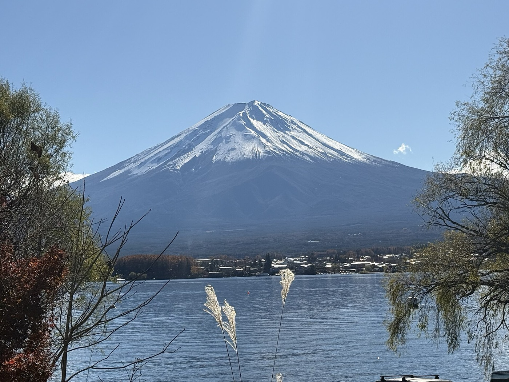
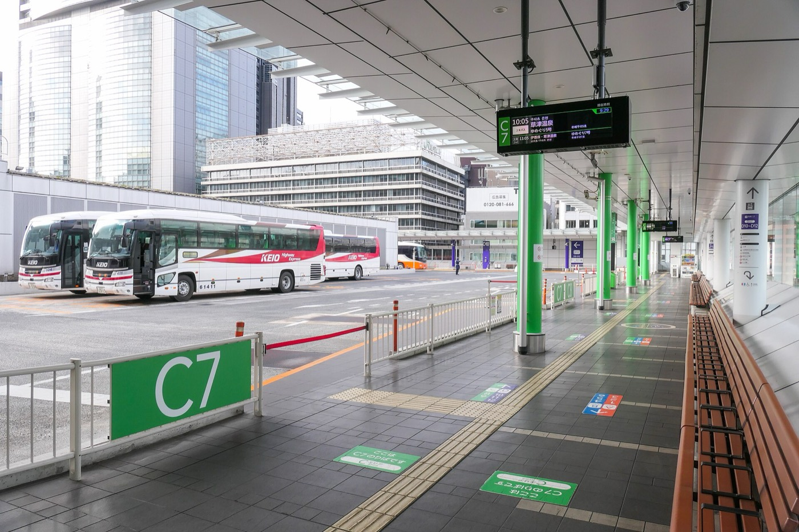
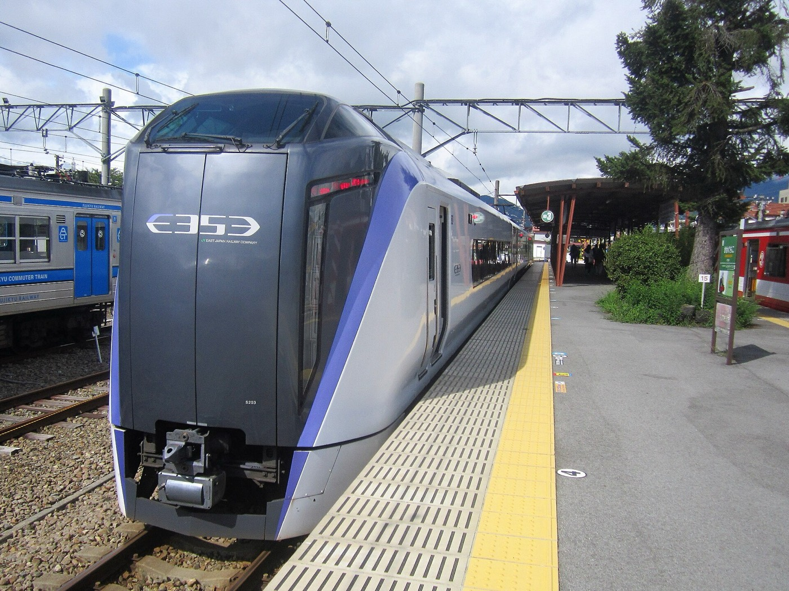
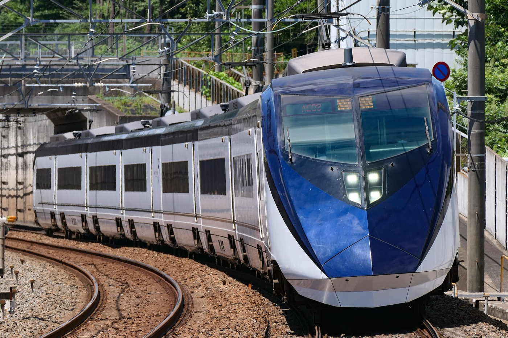
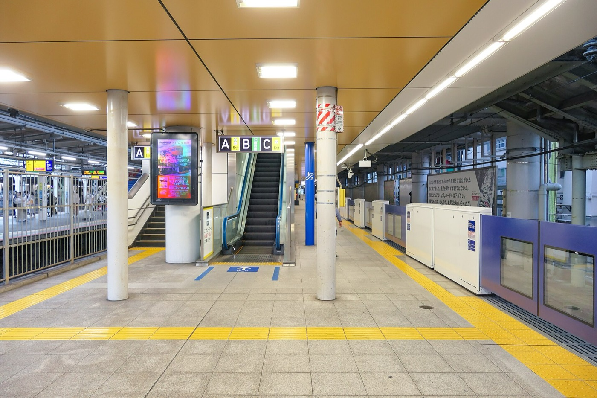
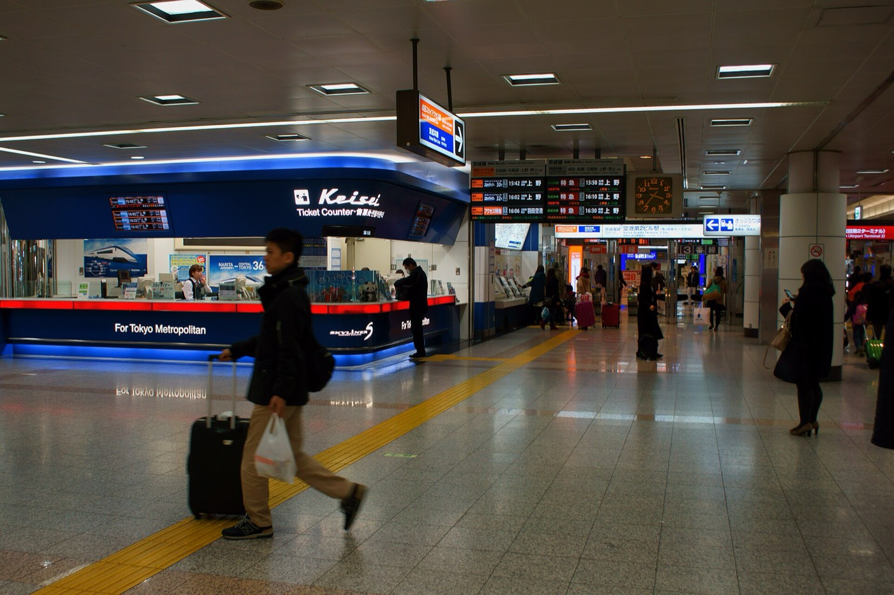

新宿高速巴士
巴士Busta 新宿出發
車程1 小時 45 分直達
單程¥2,200
優點最便宜、班次最多、直達河口湖站缺點年末出東京方向可能塞車
12/27（日）從東京去河口湖，12/29（二）從河口湖直接去成田機場搭 16:35 的班機。先看每一種搭法，最後幫你把兩天配好。
兩天交通合計約 ¥5,720 到 ¥9,730。差別在速度、轉車次數、塞車風險和拖行李的方便程度。

共 5 種搭法。巴士比較便宜、不用轉車，但可能塞車；電車準時，但比較貴或要換車。依票價由低到高排列。


優點最便宜、班次最多、直達河口湖站缺點年末出東京方向可能塞車
優點住東京站附近，不必先去新宿缺點班次比新宿少，也可能塞車
優點住上野可以直接上車缺點一天只有少數幾班，訂票頁會顯示 12/27 有沒有車
優點不怕塞車，不用預訂缺點要在大月換車，拖行李比較累
不用先買票，當天在新宿站刷 Suica 進站就能搭。
優點對號座、不怕塞車、直達河口湖缺點價格約巴士兩倍，一天只有幾班
16:35 的班機，有 6 種搭法來得及。「出發時段」是從河口湖站出發的時間，以 13:35 到 14:00 抵達成田機場倒推（起飛前 3 小時到 2 小時 35 分），有巴士的路線已多留 1 小時塞車時間。依票價由低到高排列。
越接近時段後段出發，風險越高。年末成田機場的報到、安檢和出境常要排隊，多數航空公司在起飛前 60 分鐘就停止報到。巴士塞車超過 1 小時，或錯過預定的 Skyliner、N'EX 班次，就可能趕不上。


優點全部搭法裡最便宜缺點最後一段像通勤電車，沒有行李架
優點便宜，只換一次，機場段不塞車缺點東京站的快速月台在很深的地下
優點只換一次，行李放車底，走路最少缺點兩段都走公路，塞車風險最高
優點全程鐵路，完全不怕塞車缺點要 5 點前起床，到機場要等很久
兩段都不用預訂，當天在河口湖站刷 Suica 或買票即可。
優點機場段最快最準時，有對號座和行李架缺點拖行李要轉兩次車
Skyliner 標準價 ¥2,580，官網優惠票 ¥2,310。三個管道擇一購買即可。優惠票要在乘車當天換票，年末常排隊；想提前拿到座位或避開排隊，見換票提醒。
優點在新宿換一次就到機場，有對號座缺點比 Skyliner 貴，班次也比較少
已排除兩種趕不上的搭法：河口湖直達成田巴士每天只有 13:10 一班，16:30 才到機場；富士回遊轉 N'EX 早上沒有能接上的班次。
先挑機場段的班次，再往回推要幾點到新宿或東京站、幾點從河口湖出發。每種方式從最晚約 14:45 到機場的班次，往前列到約 13:30。以下是 12/29 的表定時刻，已預留轉乘時間，但沒有預留巴士塞車的時間。
這是極限，不是建議時間。巴士只要誤點，就會接不上表上的班次；年末成田的報到和安檢也常排隊，多數航空公司在起飛前 60 分鐘停止報到。表定時刻不含年末臨時加開的班次，開賣後請在訂票頁再確認一次。
10:50 那班巴士轉乘時間不夠。
11:00 那班巴士只剩 23 分鐘轉乘，不夠。
10:50 那班巴士轉乘時間不夠。
這段車資 ¥1,280，比京成本線貴 ¥220，中途不用換車。
全程 ¥6,090。
全程 ¥5,350。
全程 ¥6,770。
12/27 和 12/29 各選一種搭法，右邊會加總兩天的票價，並列出每一段要去哪裡買票。
巴士和特急的訂票頁，只開放到「今天起一個月後的同一天」。所以 12/27 的票要等 11/27 才看得到，12/29 的票要等 11/29。下面依你選的搭法，找到要訂的那一段即可。日本時間比台灣快 1 小時。
乘車日前 1 個月開賣，¥2,580。在京成上野、日暮里或成田機場的 Skyliner 櫃檯購買，可指定班次，發車前可免費改一次。
Klook、KKday 和京成官網的優惠票都是兌換券，要到車站換成有座位的車票：平台條款寫明只能在乘車當天兌換，官網票則在購買時就綁定乘車日。年末上野、日暮里的換票櫃檯常大排長龍，用優惠票的話，抵達日暮里後先處理換票，並多留 30 分鐘。
